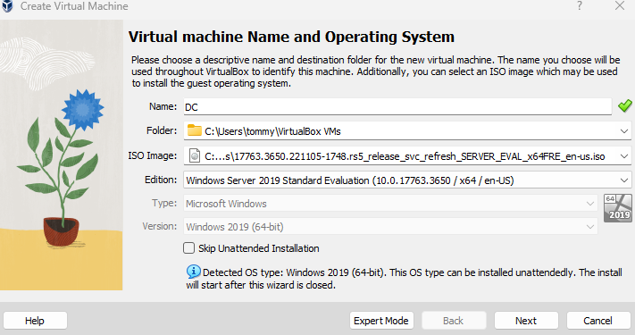
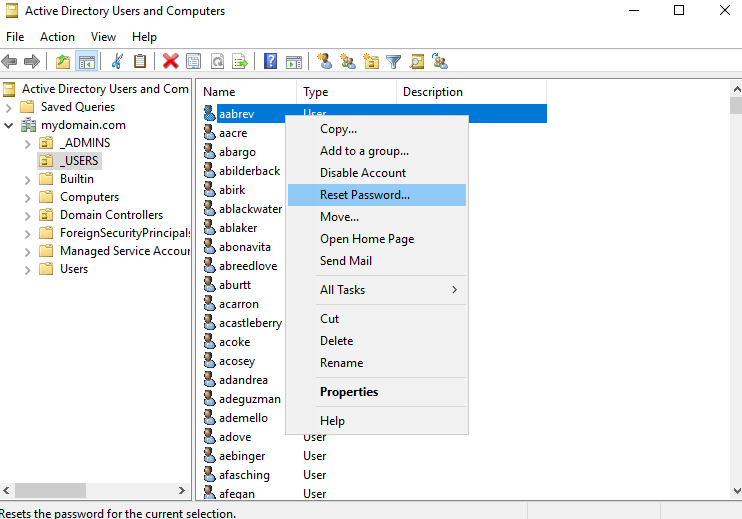

I decided to simulate what it would be like managing an enterprise Windows network to gain experience with Active Directory. In this project, I utilize two virtual machines, one acting as the domain controller with Windows Server 2019 installed, and the other acting as the client machine with Windows 10 Pro. Once the Windows domain has been created and the client has joined, I will configure a number of organizational units and group policy objects.
I began by starting up Virtual Box and creating the first virtual machine. This one will eventually be promoted to the domain controller, so I installed Windows Server 2019 .iso file which I obtained straight from the Microsoft website. I made sure to allow the virtual machine to borrow a sufficient amount of CPU cores and RAM.

The next step is to lay the foundation for network communication between my home router, the domain controller, and the eventual client virtual machine. To do this, I will configure two network adapters. The first network adapter will facilitate the connection from my internet service provider and will be a NAT to my home router. The second network adapter will be the internal network which will be set up once the server is up and running.
It was finally time to boot up our newly created virtual machine. After going through many reboots and settings windows, my virtual machine with Windows Server 2019 was working properly and I had landed on the default Windows desktop background. Next, I decided to take a look at the two network adapters that I set up during the virtual machine configuration. I needed to find out which adapter was attached to my home router and which was the internal network as they had generic names. After inspecting both, one had the typical 10.1.X.X IP address and the other had what is known as an APIPA address, starting with 169. I knew that the APIPA address was the address for my internal network because if it was able to connect to my home network and its services (including DHCP), it would have been assigned an IP address for communicating across networks. Because it could not reach my home network's assigned DHCP server, it was given an APIPA address. Lastly, I needed to change the internal network IP address from the APIPA 172.16.0.1 and once Active Directory and DNS are installed on the server, the domain controller will use itself for DNS, so I will set the DNS address to the loopback address 127.0.0.1.
Next, I installed Active Directory on our server through "Add roles and features" and promoted the server to a domain. Now that my domain was created, I accessed the domain via Active Directory Users and Computers (ADUC) and created an organizational unit named ADMINS. Inside this organizational unit, I created a new user for myself named tvalotta. Afterwards, I went into the properties of my user and made it a member of Domain Admins. Now, I can log in with my own account that will have administrator privileges and avoid having to log into the domain controller itself.
Next, Remote Access Server (RAS) and Network Address Translation (NAT) services need to be installed on the domain controller so that once my Windows 10 client is created, it can access the internet through the domain controller. There is still one problem for the client computer, though. It should be able to access the internet now that RAS/NAT is enabled, but the client has no way to receive an IP address. This means that the client will be stuck with that APIPA address I mentioned earlier. To avoid this, I installed DHCP services on the domain controller. I access "Add roles and features" once again, but this time I select DHCP. While configuring the DHCP, I will set the scope as 172.16.0.100 – 172.16.0.200. This will allow the DHCP to lease out up to 100 addresses at a time. For my lab purposes, I will never come close to needing all of these IP addresses active at the same time in my lab environment, but it does give me the flexibility to be ready for any future projects of larger scale.
Before moving on to configure the virtual machine for the client computer, I will create a USERS organizational unit and a few user accounts to work with. I created the organizational unit and user accounts through ADUC and used a random name generator to populate the names of the accounts. After creating the accounts, I configured the virtual machine for the client computer. I installed the Windows 10 Pro .iso file and allocated an appropriate amount of RAM and CPU cores.
Once I had finished setting up the client virtual machine, I logged in with one of the users and joined the client computer to the domain. Now that the client computer and the domain were connected it was time for the fun stuff, creating group policy objects!
The first group policy object I created was a way to standardize the desktop background. I felt this would be relevant in an enterprise environment because the company would like all users to have the same experience when accessing their work computers. I opened the group policy management window via the gpmc.msc command at the command prompt. Then I highlighted the group policy object node and selected new. I navigated to desktop background and added a file path for the image of the new desktop background. Afterwards, I linked the group policy object to the organizational unit USERS. To solidify the changes made on the domain controller, I needed to log into a user from the client machine and run the command gpupdate /force.
Another common task that I wanted to prepare for was resetting a user's password. An easy way to do this from the domain controller or an account that's part of the administrator organizational unit is via ADUC. From here, I right clicked the first user and selected reset password. I gave the account aabrev a new password, and if the user told me that they were locked out of their account, I would've also checked the box to unlock the account.

Please check this blog again in the future as I plan to create more group policy objects and a more thorough hierarchy of organizational units!